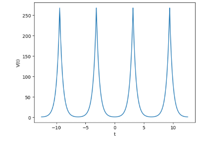
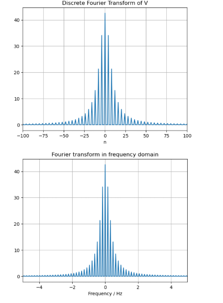
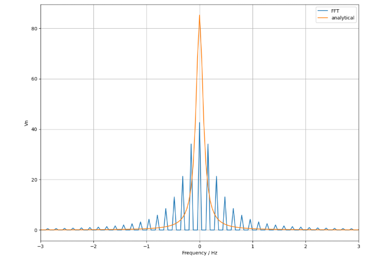

Exploring frequency-domain representations of sine waves, square waves, and Gaussians
This project uses the Fast Fourier Transform to explore how various well-known mathematical functions appear in the frequency domain. It demonstrates the power of FFT in breaking down signals into harmonic components and illustrates symmetry and amplitude features clearly.
Example: Cosh function with periodic extension
Example: Gaussian function and its transform t vs frequency domain
Example: Comparison between analytical DFT computing Fourier coefficients and numerical FFT
 Download Notebook